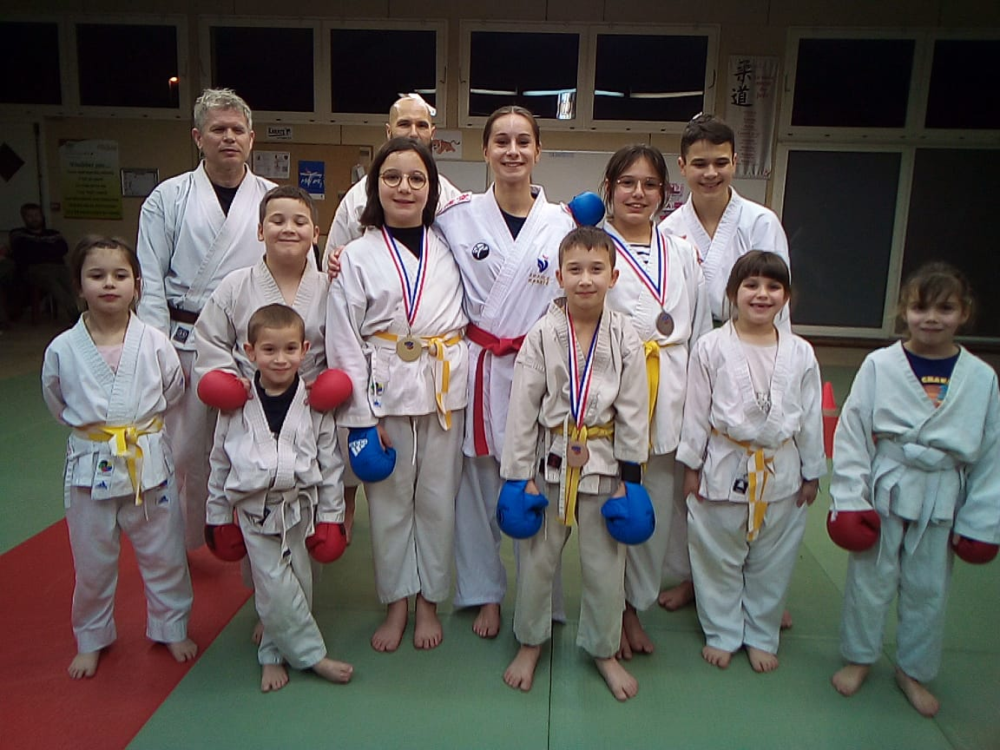

Acte 1 : Le quotidien
Chaque semaine, les licenciés se retrouvent au dojo. C’est un lieu de rigueur, de respect... mais aussi de rires.
Acte 2 : Les efforts
Les entraînements s'enchaînent. Les ceintures changent. Certains chutent, d'autres les relèvent. La cohésion grandit.
Acte 3 : L'esprit du club
Le club n'est pas qu'un lieu d'entraînement. Il devient une seconde famille. Un espace où chacun trouve sa place et se dépasse.